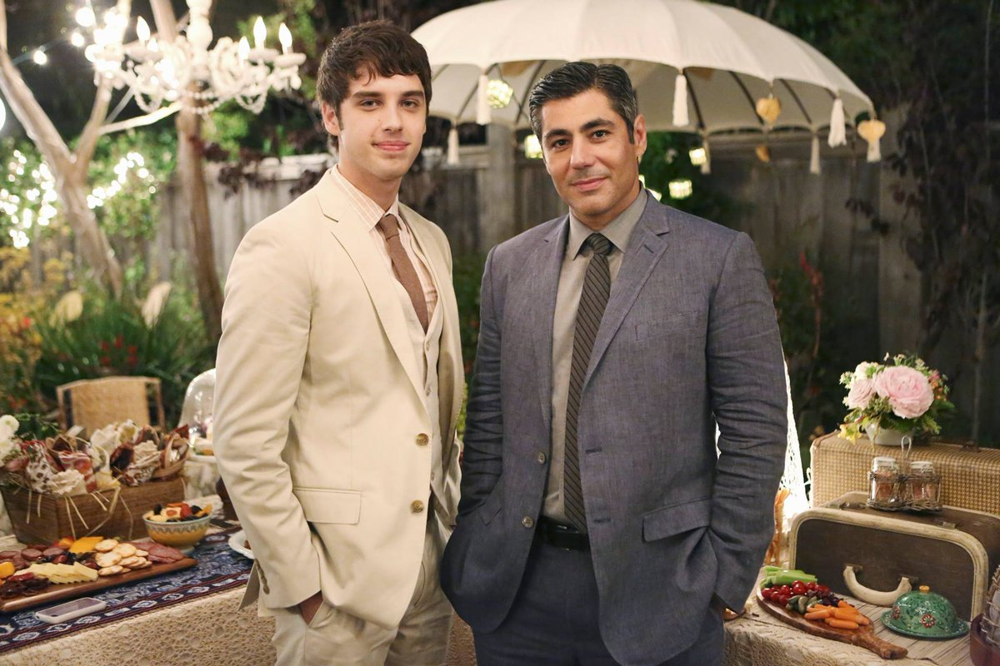
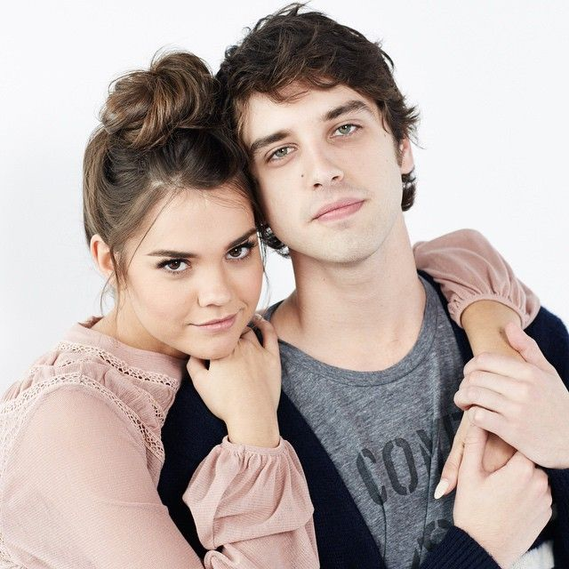

Brandon Foster es un personaje principal de The Fosters. Él es el hijo biológico de Stef Adams Foster y Mike Foster y el hijastro de Lena Adams Foster. También es el hermano adoptivo de Mariana, Jesús, Callie y Jude Adams Foster. Se ha convertido en el hermano adoptivo de AJ Hensdale.
Brandon es interpretado por David Lambert.
Brandon es un tipo sensible y una persona que es altamente conocida por su talento musical. Él también es muy desinteresado y haría cualquier cosa por la gente que él ama, como se muestra de manera variada a lo largo de la serie, a menudo poniendo a otros por delante de sí mismo. Brandon no es un friki ni un chico popular. Él está en el medio.
Brandon nació el 28 de agosto de 1996 y es hijo de Stef y Mike. Durante los primeros años de su vida sus dos padres biológicos, Stef y Mike, convivieron juntos bajo el mismo techo. Sin embargo, su madre Stef descubrió que era lesbiana y que se había enamorado de Lena Adams Fosters, con la que acabaría formando su familia. Tras el divorcio de sus padres, Brandon perdió una gran afinidad con su padre y que hizo que, junto al problema de alcoholismo del padre, se distanciaran. Duranrte la serie Brandon va teniendo una serie de momentos en lo que se va a vivir con su padre o en los que se pelea con él hasta el punto de no querer ni verlo. Esto hará evolucionar su relación hasta llevarla a un punto etable.
 Con respecto a sus líos amorosos, durante toda la serie una serie de novias y enamoramientos como por ejemplo: Lou, Courtney o Talya. Sin embargo, durante toda la serie existe un lío amoroso entre Brandon y Callie que es lo que da lugar al llamado Brallie. Este shippeo, al igual que se ha dicho en la página que trata sobre Callie se tratará másn profundidad en la páfina dedicada a este shippeo. No olvidéis acceder a ella para conocer más información de esta maravilla